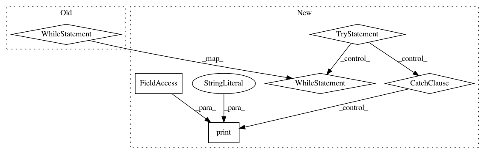

6c91204831b4c7628ed6b0975b26df039f866c2c,deeppavlov/models/classifiers/intents/intent_model.py,KerasIntentModel,train,#KerasIntentModel#Any#,159
Before Change
print("\n____Training over {} samples____\n\n".format(n_train_samples))
while epochs_done < self.opt["epochs"]:
batch_gen = dataset.batch_generator(batch_size=self.opt["batch_size"],
data_type="train")
for step, batch in enumerate(batch_gen):
metrics_values = self.train_on_batch(batch)
updates += 1
if self.opt["verbose"] and step % 50 == 0:
log_metrics(names=self.metrics_names,
values=metrics_values,
updates=updates,
mode="train")
epochs_done += 1
if epochs_done % self.opt["val_every_n_epochs"] == 0:
if "valid" in dataset.data.keys():
valid_metrics_values = self.model.test_on_batch(x=valid_x, y=valid_y)
log_metrics(names=self.metrics_names,
values=valid_metrics_values,
mode="valid")
if valid_metrics_values[0] > val_loss:
val_increase += 1
print("__Validation impatience {} out of {}".format(
val_increase, self.opt["val_patience"]))
if val_increase == self.opt["val_patience"]:
print("___Stop training: validation is out of patience___")
break
else:
val_increase = 0
val_loss = valid_metrics_values[0]
print("epochs_done: {}".format(epochs_done))
self.save()
def infer(self, data, return_proba=False, *args):
After Change
print("\n____Training over {} samples____\n\n".format(n_train_samples))
try:
while epochs_done < self.opt["epochs"]:
batch_gen = dataset.batch_generator(batch_size=self.opt["batch_size"],
data_type="train")
for step, batch in enumerate(batch_gen):
metrics_values = self.train_on_batch(batch)
updates += 1
if self.opt["verbose"] and step % 50 == 0:
log_metrics(names=self.metrics_names,
values=metrics_values,
updates=updates,
mode="train")
epochs_done += 1
if epochs_done % self.opt["val_every_n_epochs"] == 0:
if "valid" in dataset.data.keys():
valid_metrics_values = self.model.test_on_batch(x=valid_x, y=valid_y)
log_metrics(names=self.metrics_names,
values=valid_metrics_values,
mode="valid")
if valid_metrics_values[0] > val_loss:
val_increase += 1
print("__Validation impatience {} out of {}".format(
val_increase, self.opt["val_patience"]))
if val_increase == self.opt["val_patience"]:
print("___Stop training: validation is out of patience___")
break
else:
val_increase = 0
val_loss = valid_metrics_values[0]
print("epochs_done: {}".format(epochs_done))
except KeyboardInterrupt:
print("Interrupted", file=sys.stderr)
self.save()
def infer(self, data, return_proba=False, *args):
In pattern: SUPERPATTERN
Frequency: 4
Non-data size: 6
Instances
Project Name: deepmipt/DeepPavlov
Commit Name: 6c91204831b4c7628ed6b0975b26df039f866c2c
Time: 2018-01-18
Author: dilyara.rimovna@gmail.com
File Name: deeppavlov/models/classifiers/intents/intent_model.py
Class Name: KerasIntentModel
Method Name: train
Project Name: deepmipt/DeepPavlov
Commit Name: 0ddd27b71f54be5682da90473d00ea671a3459ca
Time: 2018-01-29
Author: arkhipov@yahoo.com
File Name: deeppavlov/models/classifiers/intents/intent_model.py
Class Name: KerasIntentModel
Method Name: train
Project Name: deepmipt/DeepPavlov
Commit Name: c04aefe07dad54610c49e7841410c85876896b34
Time: 2018-01-24
Author: yoptar@gmail.com
File Name: deeppavlov/models/classifiers/intents/intent_model.py
Class Name: KerasIntentModel
Method Name: train
Project Name: deepmipt/DeepPavlov
Commit Name: cc2b39fcae8c813851d704e50b390fdac607c914
Time: 2018-01-24
Author: yoptar@gmail.com
File Name: deeppavlov/core/commands/train.py
Class Name:
Method Name: train_batches